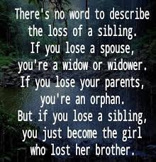

Or the girl who lost both her older sisters. I'll explain later, but due to our tragic upbringing and dissolve of our family, my older siblings suffered great psychological trauma and never properly functioned into a proper adulthood. Gina died at 33 from anorexia, Missy from many mini strokes from a mind too stressed, and my older brother Mark is in residential care, from severe brain damage from alcohol and drug abuse. To say this is a sad story, is a great understatement.
Back for more of the story